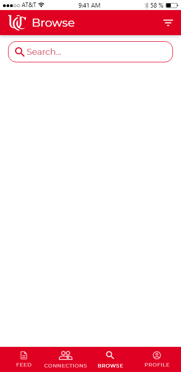
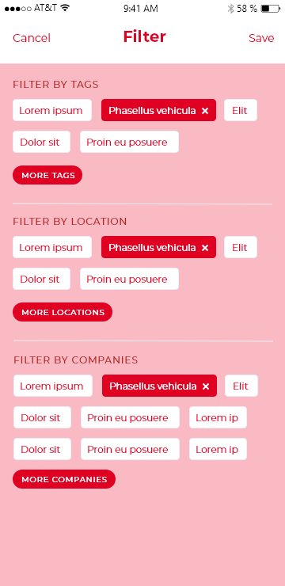
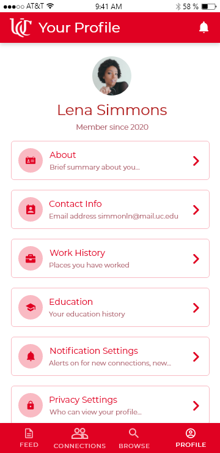

Topic
UC COOPeration
UC COOPeration is a software development project I started last summer. The engineering co-op program at UC is one of the biggest attractions to most students around the world. Therefore, students need to find a good co-op opportunity. Co-op students are generally eager to connect with other students to learn about the culture and the co-op program of the companies they have worked with before. These pieces of information can be crucial to complete a successful co-op search. Students typically rely on co-op advisors for contact information which is not efficient. Although the University of Cincinnati has many students participating in a co-op program, there is no network connecting them.
UC COOPeration is a solution to this. UC COOPeration is a social media platform to connect co-op students at the University of Cincinnati. It will allow students to message other students and search for companies where other co-ops have worked. UC COOPeration establishes a co-op community at the University of Cincinnati. I was the Program Manager of the project and responsible for the UX/UI development as well as the android app. Please check out the presentation and pictures of the app.
Presentation
Final Presentation
Pictures
UX/UI of the Android App




